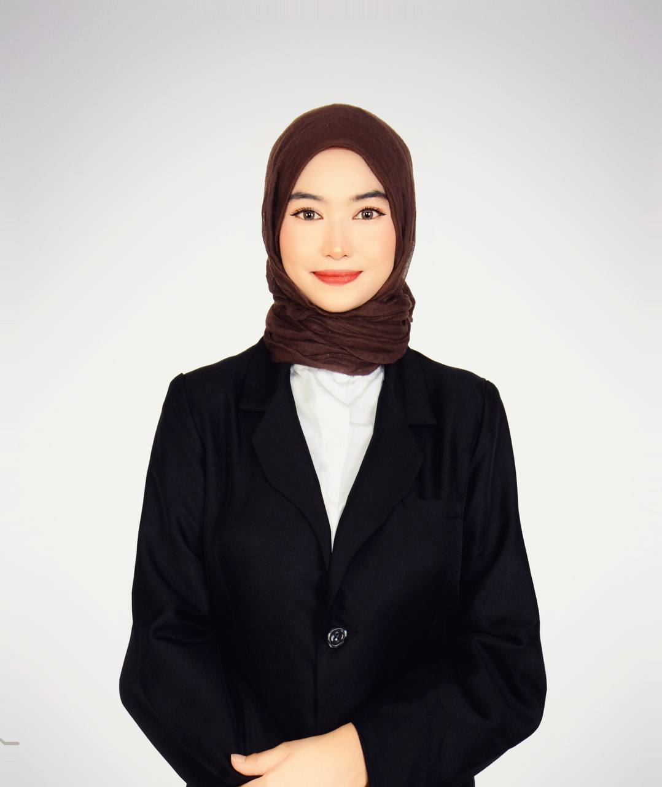

My Resume
Full Name:Nuratikah Safia Binti Khairoel Ariffin
Email: safianuratikah@gmail.com
Phone: +601119580805
Education: Bachelor of Information Science (Hons), Information Content Management, College of Computing, Informatics & Mathematics
Experience:
🎤 Served as an Emcee, leading events and engaging audiences with confidence and professionalism.
📝 Part of the Management Team at UiTM, assisting in planning and organizing university activities effectively.
🎓 Participated in MT (Majlis Tertinggi) events, contributing to event coordination and execution.
🤵 Worked as a VIP Usher, ensuring smooth experience and hospitality for distinguished guests.
Skills: Web Design, Photography, Adobe Photoshop, HTML/CSS, JavaScript
